Contributor: 조남경님
Bing Image Creator
- Microsoft가 OpenAI와 손을 잡고 진격을 계속하고 있습니다.
- ChatGPT 관련된 협력에 이어 지난 5월 21일, BingChat에서 그림을 그릴 수 있음을 공지했습니다.
- 이미 Bing Image Creator라는 이름으로 OpenAI의 DALL-E를 서비스하기 시작했으며
- 모든 면에서 DALL-E보다 성능이 우수하다는 평을 받고 있습니다.
- Midjourney, Stable Diffusion 등 다른 좋은 모델들이 있습니다.
- 그렇지만 Bing Image Creator는 간편합니다. Discord 없이 웹에서 접근 가능하고, Bingchat에서 쓸 수 있다는 장점이 있습니다.
- 특징을 하나씩 알아가는 중이지만 본 글을 통해 제가 알게 된 노하우를 조금씩 나누고자 합니다.
1. Bing Image Creator 접속
https://www.bing.com/create에 접속하면 다음과 같은 화면이 보입니다.
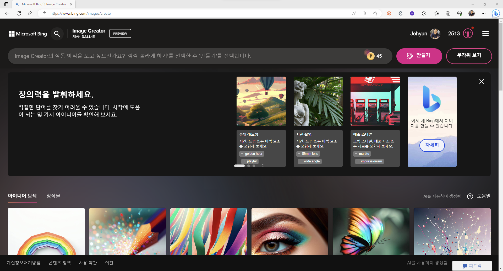혹시 위와 같은 화면이 보이지 않는다면, 오른쪽 위에서 로그인버튼을 찾아 들어갑니다.
Microsoft 계정이 필요합니다.
윈도우 사용자라면 윈도우를 설치할 때 사용한 그 계정을 사용하시면 됩니다.
전반적인 구성은 단순합니다.
상단 입력창에 프롬프트를 입력해 그림을 생성합니다.
자주색 만들기 버튼을 누르면 그림이 생성되는데, 바로 왼쪽 번개 코인 숫자가 보일 것입니다.
부스트라고 합니다.
그림을 한 번 그릴 때마다 숫자가 차감이 되지만 0이 된다고 못 그리지 않습니다. 늦게 그려질 뿐입니다.
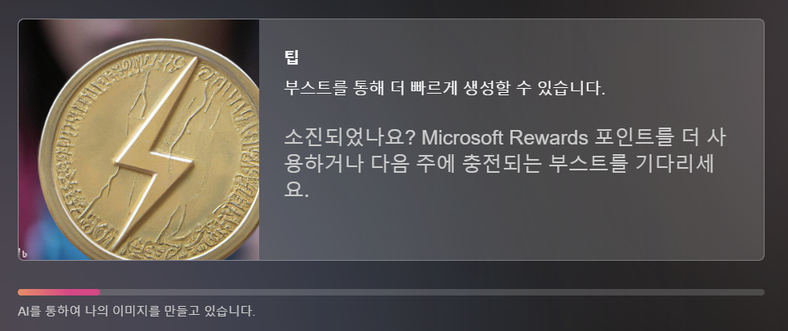부스트는 오후 4시경 리셋됩니다.
Microsoft bing 검색, Edge browser 사용 등 Microsoft 제품을 열심히 쓰면 최대 코인 수가 늘어납니다.
저는 매일 부스트가 100개로 리셋됩니다.
Microsoft Edge browser를 기본으로 사용하고 있기 때문입니다.
2. 그림 그리기
- 첫 번째 그림으로 고양이를 그립니다.
- 입력창에 cat이라고 입력하고 만들기를 누릅니다.
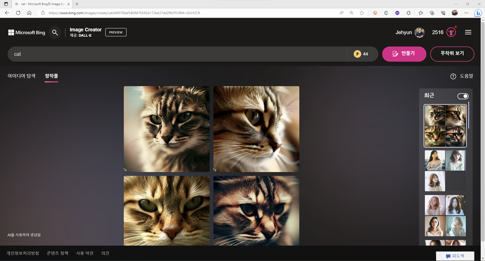
- 잠시 기다림이 지난 후 고양이 얼굴이 생겼습니다.
- 반가운 마음에 곧장 다운로드를 하고 싶겠지만 조금만 참아봅시다.
- 내 머리 속에는 하얀 고양이가 웃는 옆모습이 자리잡고 있기 때문입니다.
- 이 그림을 머리 속에서 화면으로 옮기려고 합니다.
3. 그림 고치기
3.1. 고양이 표정, 색 고치기
- cat 앞에 smiling과 white를 차례로 추가해 표정과 색을 지정합니다.
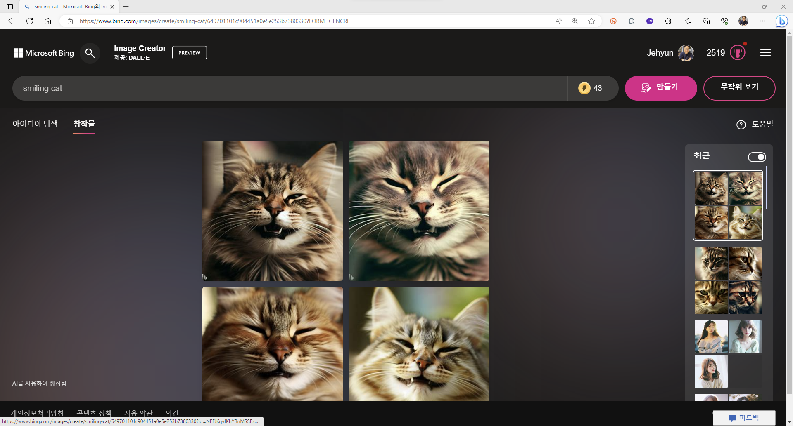
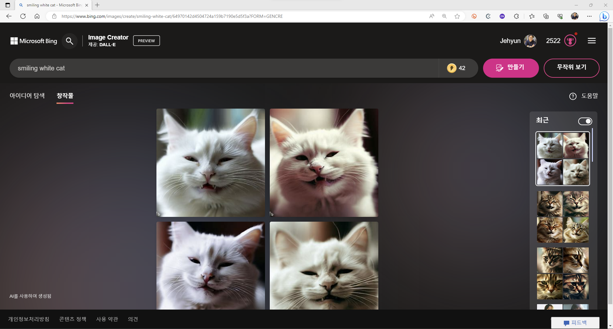
- 이 밖에 원하는 그림이 있다면 속성을 지정하는 말을 얼마든지 붙일 수 있습니다.
- 귀찮게 외워야 하는 특별한 명령어가 없습니다.
- 머리 속으로 그림을 최대한 구체적으로 그린 후, 이를 말로 옮기면 됩니다.
3.2. 우리말로 명령하기
- 꼭 영어를 사용해야 하는 것은 아닙니다.
- 미소짓는 하얀 고양이를 입력해도 같은 효과가 있습니다.
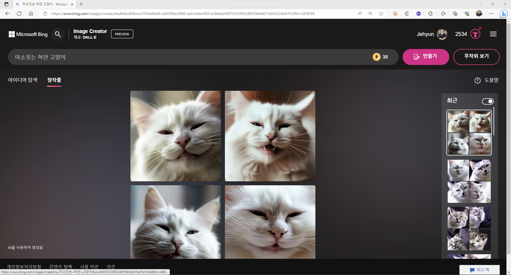
- 그러나 저는 영어 입력을 선호하는 편입니다.
- 이런 모델이 학습한 언어 중 영어의 비율이 압도적이기 때문에 적확한 표현이 가능하기 때문입니다.
- 물론 영어단어가 잘 떠오르지 않거나 한글 입력이 더 적확할 때는 한글을 씁니다만,
- 경험적으로 영어 입력이 의도를 더 잘 반영하는 것 같습니다.
- “미소짓는 white cat” 처럼 여러 언어를 섞어도 됩니다.
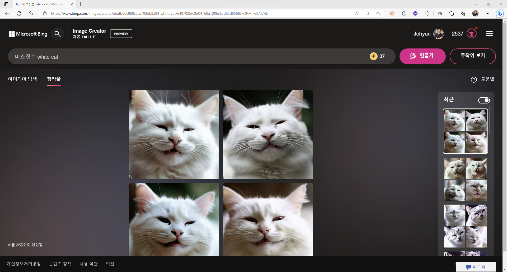
3.3. 속성 개별 지정
- 고양이의 속성으로 “smiling”과 “white”를 지정했습니다.
- 묘사하고자 하는 속성이 길어지면 문장이 꼬이기 시작합니다.
- 이럴 때, 속성을 따로 떼어 지정할 수 있으면 의도 반영이 유리해집니다.
- 중괄호를 사용할 수 있으며, 소재, 스타일, 색, 크기 등 여러 속성을 지정할 수 있습니다.
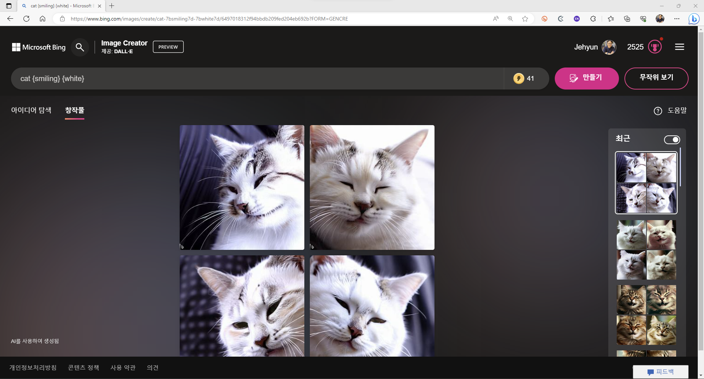
3.4. 구도 지정
- 우리 그림에서는 고양이가 정면을 보여주고 있습니다.
- 그러나 사실 그래야만 하는 이유는 없습니다. smile이라는 단어에 의해 확률적으로 앞모습이 나왔을 뿐입니다.
- 고양이를 바라보는 카메라의 방향을 지정하면 구도가 바뀝니다.

- side view라는 입력에 left view가 나온 것은 우연입니다.
- 방향을 지정하고자 하면 right view처럼 명확히 지정할 수 있습니다.
- 뒷모습을 뜻하는 rear view에서는 고양이가 고개를 돌리고 있습니다. smiling때문입니다.
- 같은 구도가 여러 이름으로 표현되기도 합니다.
- top view는 overhead shot과 동일하고, bottom view는 low angle과 동일합니다.
- dutch angle은 front view와 유사하나 삐딱합니다.
- 좌우는 딱히 중요하지 않으므로 side view로 지정하겠습니다.
3.5. 표현 범위 지정
- 고양이 머리만 잔뜩 그려지고 있지만, 저는 고양이 전체 모습을 그리고 싶습니다.
- 그림 대상을 명확히 해서 다리와 꼬리까지 모두 나오게 해봅니다.
- 먼저, full body라는 프롬프트를 시도합니다.
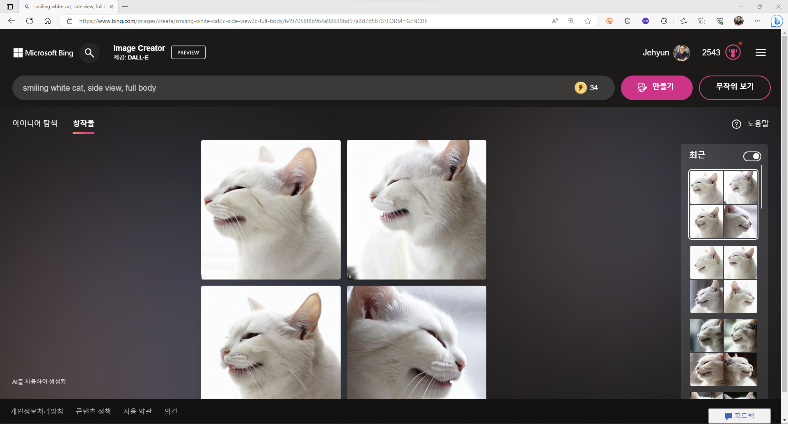
- 명령이 불충분한 것 같습니다. 마음에 드는 그림이 나오지 않았습니다.
- 발과 꼬리를 포함하라는 뜻으로 including feet and tail을 추가합니다.
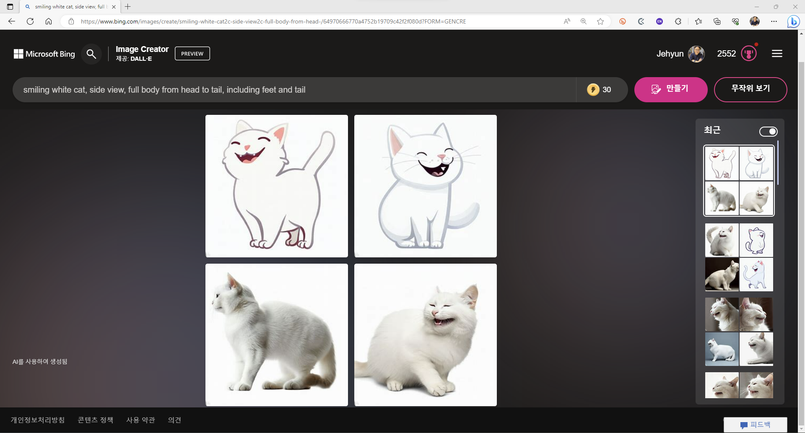
- 갑자기 만화체가 등장해서 조금 당황스럽긴 하지만 이상한 일은 아닙니다.
- 그림체를 지정한 적은 없으니까요. 애초에 사진 같은 이미지도 랜덤으로 나왔을 뿐입니다.
- 왼쪽 아래 이미지가 맘에 듭니다. 저장하기로 합시다. 선택합니다.
4. 그림 저장
- 화면 한가득 내가 선택한 그림이 펼쳐집니다.
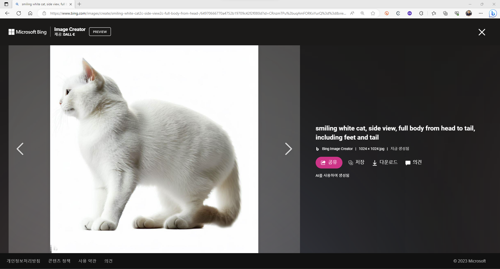
- 다운로드를 누르면 파일이 저장됩니다. 1024 x 1024의 .jpg입니다.
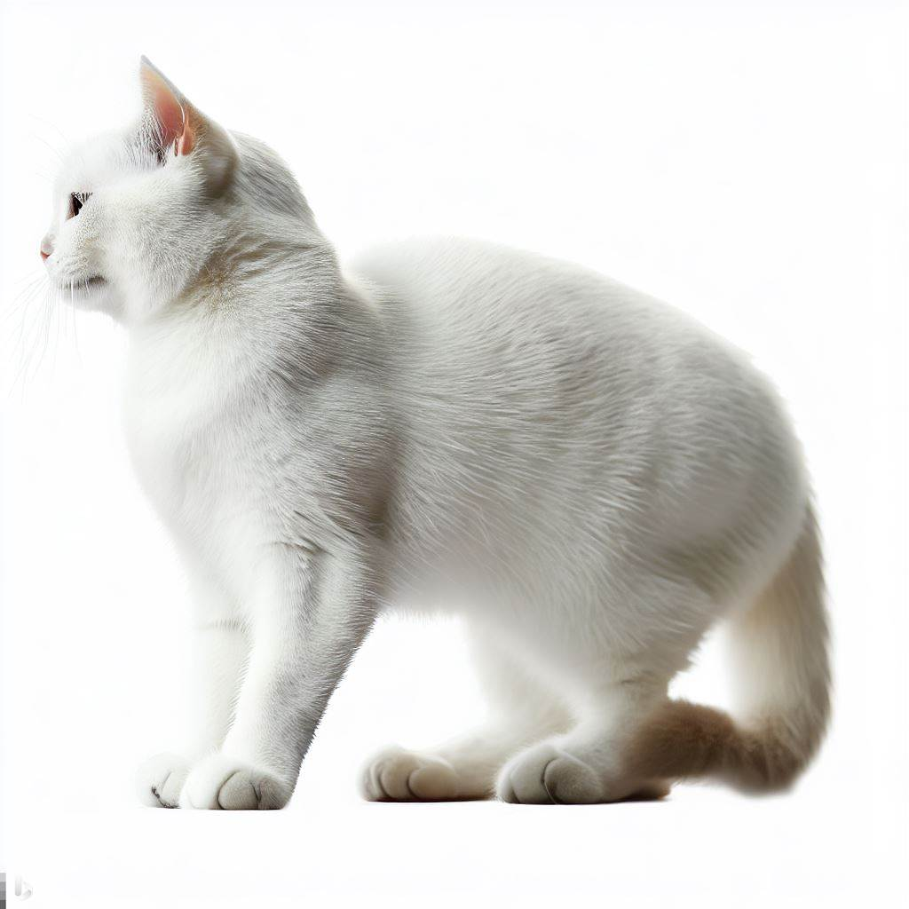
- 저장을 누르면 내 bing 계정에 저장됩니다.
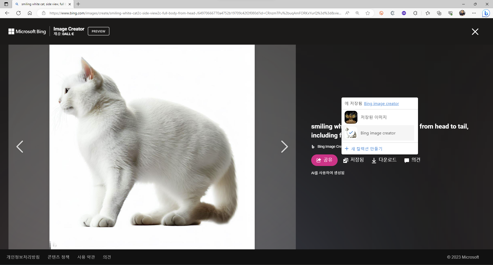
- 링크를 따라가면 내가 저장했던 그림들을 나중에 다시 꺼내볼 수 있습니다.
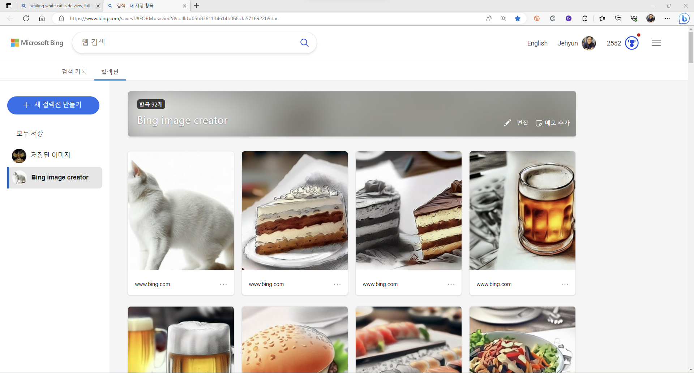
- 오늘은 여기까지입니다.
- 각자 머리 속에 떠오른 그림을 그려보면 어떨까요?